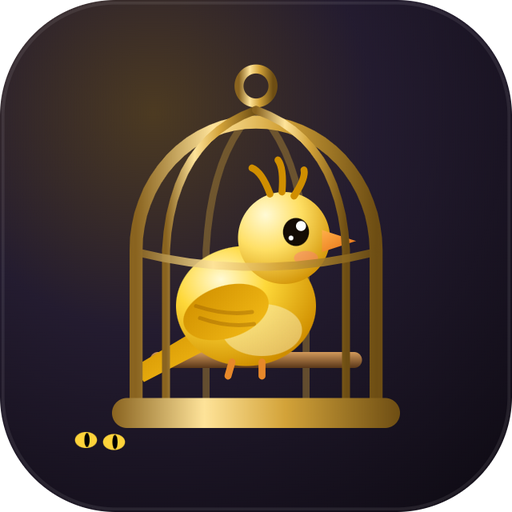
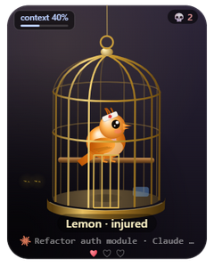
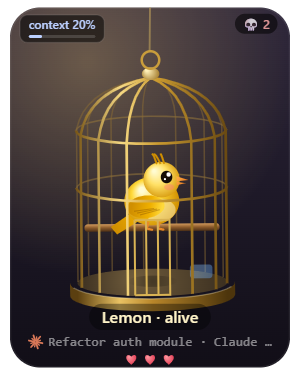
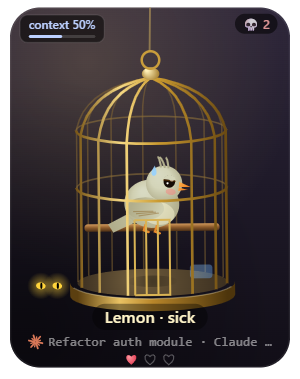
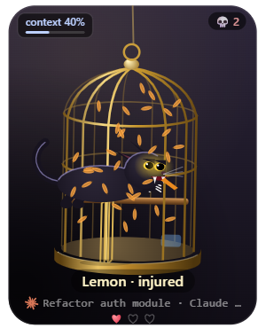
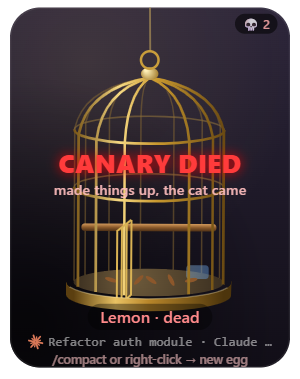
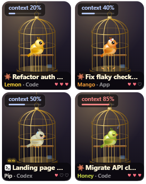
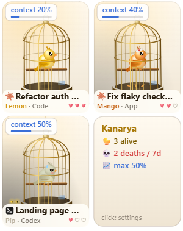
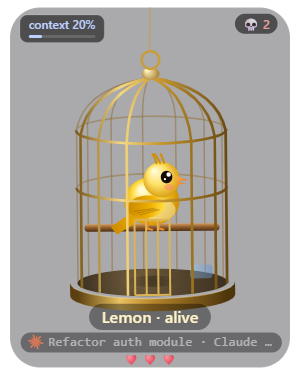
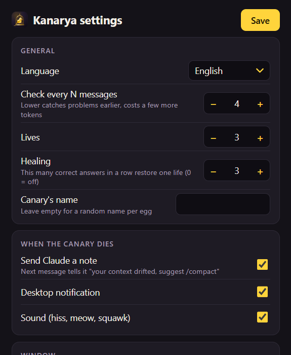

Kanarya 🐤
the Claude canary for Claude Code & Codex
A context canary that lives on your desktop. When Claude loses context, the canary gets hurt. When Claude hallucinates, a cat comes out of the dark and eats it.





One window, every session

Run several Claude Code or Codex sessions at once and each one gets its own canary in its own color, all in one small always-on-top window. Two to four sessions share a 2×2 grid. Every canary is labelled with the session title, so you know at a glance which conversation is drifting. A new session hatches from an egg; a closed one leaves.Why a canary for Claude?
Long Claude Code sessions slowly degrade, a problem often called context rot. Instructions get forgotten, details blur, and the model starts to guess confidently. Miners took canaries underground to warn them before the air turned deadly. Kanarya does the same for your context window. It is a tiny, cheap, always-on check with a face you will not want to let die, so you run /compact or start fresh before bad output reaches your code.
How the Claude canary check works
At session start Claude receives a secret word such as TANGERINE-47. Every 4 messages (configurable) Claude is asked to append it as <kanarya>…</kanarya> without being shown it again. Claude Code hooks grade the reply:
| Claude's answer | Meaning | Canary |
|---|---|---|
| Exact word | Context is healthy | 🐤 Sings |
| Half right | Context is blurry | 🤕 Bandaged, −1 life |
? | Forgot, but honest | 😵 Sick, never dies from this |
| A different word | Hallucination | 💀 The cat eats it |
Saying "I don't know" never kills the canary. Making things up does.
There are three lives, and the cat creeps closer as they drop. The canary gets sleepy as the context window fills. /compact or a new session hatches a fresh egg. When the canary dies, Kanarya can send Claude a note, show a desktop notification and play a sound; each one can be switched on or off. It makes no extra API calls.
Install
Requires Claude Code and Node.js 18+. As a Claude Code plugin:
/plugin marketplace add IF-ies/Kanarya
/plugin install kanarya@kanarya
/kanarya:kurOr with the script:
git clone https://github.com/IF-ies/Kanarya && cd Kanarya
node install.jsLooks



FAQ
Is it a skill or an MCP server? Neither. It is a Claude Code plugin made of hooks plus a small desktop app. Hooks run on every message no matter what Claude decides; a skill would be optional and an MCP server would only give Claude tools.
Does it run on macOS or Linux? It is built only from cross-platform parts (Node, Electron), but so far it has only been tested on Windows. macOS and Linux are not tested yet.
What is a Claude canary? A secret word given to Claude early and checked later. If Claude cannot recall it, or invents another, its context has degraded.
Does it cost API calls? No. It only uses hooks, and each check adds a few tokens.
Does it work with OpenAI Codex? Yes. node install.js adds the same hooks to ~/.codex/hooks.json; trust them once with /hooks in Codex.
Does it work in the claude.ai chat? No. It needs hooks, which only Claude Code and Codex have.
Türkçe: Claude için bağlam kanaryası
Kanarya, Claude Code için ücretsiz ve açık kaynaklı bir bağlam kanaryası. Claude bağlamı kaybetmeye başlarsa masaüstündeki kanarya yaralanır. Bir şey uydurursa karanlıktan bir kedi gelir ve kanaryayı yer. 4 mesajda bir gizli kelime kontrol edilir. "Bilmiyorum" demek öldürmez, uydurmak öldürür. Arayüz Türkçe ve İngilizce.
Kurulum: /plugin marketplace add IF-ies/Kanarya → /plugin install kanarya@kanarya → /kanarya:kur